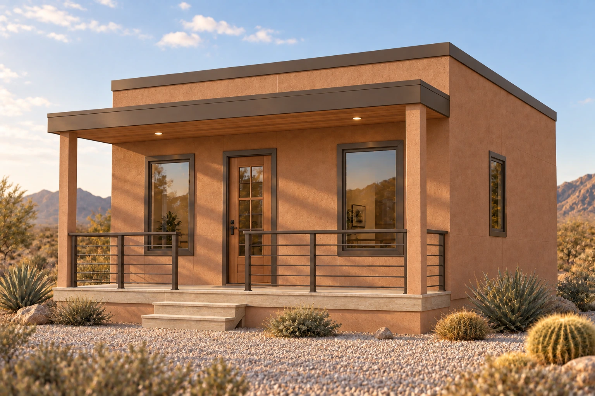
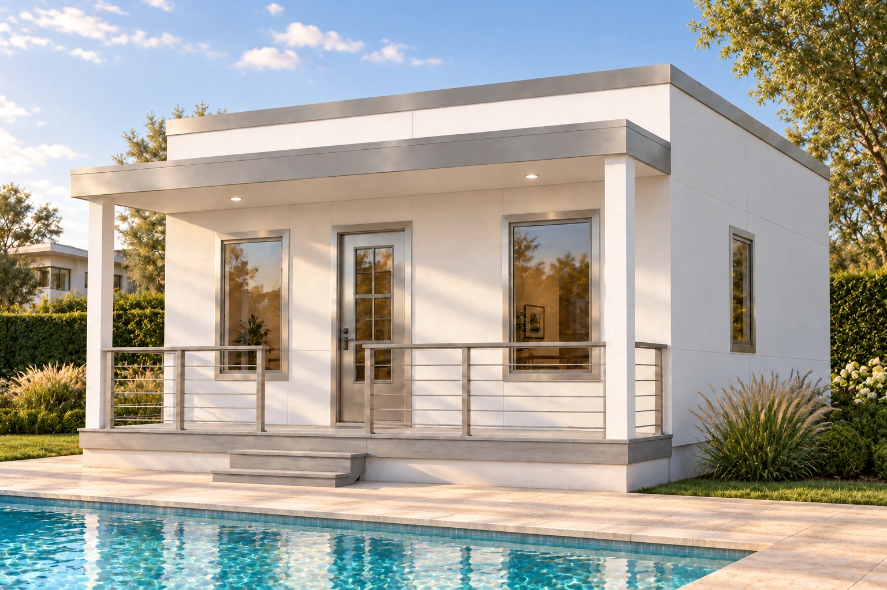
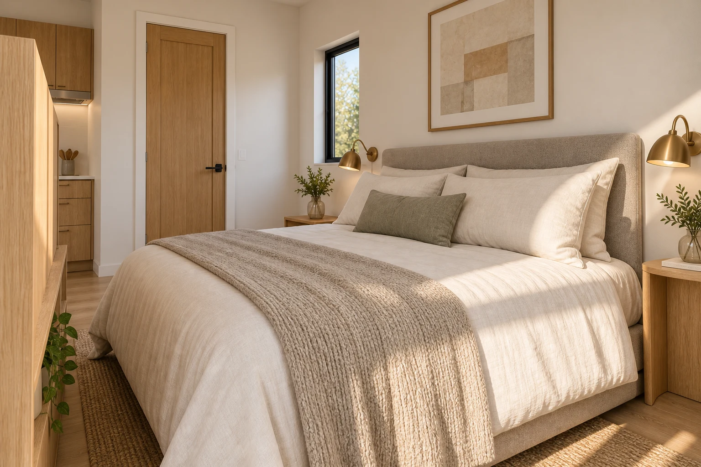

Origin 320 / The roof collection
Your home.
Your roofline.
The same compact studio and covered porch. A clean flat roof or the familiar shape of a pitched gable.
Chalk-white stucco, a sage door, and a light silver metal roof.
Explore the studioConcept imagery. Finishes and details are subject to final specifications.
Flat roof / Finish comparison
Slide into a different setting.
White and stainless beside the pool. Warm adobe in the desert. Drag the divider to explore both.


White + stainlessDesert adobeDrag across the image, or focus the slider and use the arrow keys. Concept renderings compare finishes and settings; small details may vary.
Regional finish collection
Find your sense of place.
Explore five palettes for the flat-roof model, with coordinated interior concepts. Pitched-roof finishes are shown in the roof selector above.
Renderings show design concepts. Colors, materials, and small details may differ from final specifications.
A LITTLE SPACE, CONSIDERED.
Everything has
its place.
Origin 320 brings living and sleeping into one open studio, with a compact kitchen at the rear and an enclosed bathroom. A central media divider gives the two areas their own identity.
- 01Open living and sleeping areas
- 02Rear kitchen and enclosed bath
- 03Full-width, 4-foot-deep front porch
- 04Coordinated siding and interior finish concepts

Tell us what home looks like to you.
Your place.
Your next chapter.
Tell Sundello where you’re planning to build, which roofline you prefer, and which finish feels like you. Ask about pricing, available finishes, and the next steps for your project.
Five regional palettes, illustrated with flat-roof exterior and interior concepts.